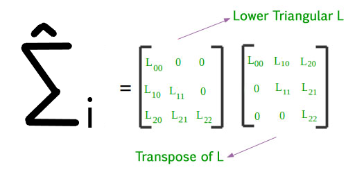

Just like normal linear regression, we want to make sure that our LME models are a good fit for our data. Linear Regression had two important assumptions that needed to be verified:
With residuals written as \(r_{ij} = Y_{ij} - X_{ij}'\hat{\beta}\),
The data was normally distributed across all variables. This was typically checked using a QQ-plot of the residuals
The data was exhibited Homoscedasticity, otherwise known as Constant Variance. This was typically verified by using the checking for any patterns in a fitted vs residual scatterplot.
By the nature of longitudinal studies, the residuals are correlated and do not necessarily have constant variance. To account for this, the residuals need to be transformed before they can be properly assesed.
Our aim in transforming the resiudals is to “de-correlate” them that they have zero correlation and constant variance. This will allow us to examine them like a we would a linear model.
To transform the residuals, we’ll use the Cholesky decompostion of \(\hat{\Sigma}_i = L_iL_i'\)

\(\hat{\Sigma}_i\) is a positive-definite matrix
\(L_i\) is a lower triangular matrix
\(L_i'\) is the conjugate transpose of \(L_i\)
Our new transformed variables can be computed as
\(r_{i}^* = L_i'r_i\) where \(r_{i} = Y_{ij} - X_{ij}'\hat{\beta}\)
Once we have this result, we can perform residual diagnostics as they will be uncorrelated and have a unit variance
lme_fit <- lme4::lmer(data = lme_two, formula = Y ~ X1 + time_id + (1 + time_id | id) )
summary(lme_fit)First we need to get the value of \(\Sigma_i\)
We can approximate it with \(\hat{ \Sigma_i} = Z_iGZ_i' + \sigma^2I_{n_i}\)
# get the covariance matrix for random effects component (G)
random_covar <- crossprod(as.matrix(lme4::getME(lme_fit, "Lambdat")))
#random_covar
# get the design matrix Z
Zt <- lme4::getME(lme_fit, "Zt")
# get the variance of the error term
err_var <- sigma(lme_fit)^2
# Compute the covariance matrix
var_b <- err_var * t(Zt) %*% random_covar %*% Zt
# get the covariance of the error term
sI <- err_var * diag(nrow( lme4::getData(lme_fit) ))
# We can now compute the Variance of the entire Y term
var_y <- var_b +sI# Transform the fitted and residual values
# Use Cholesky Decomposition on the variance of Y
var_y_decmp <- chol(var_y)
# Get the residuals from the fit
resids <- residuals(lme_fit)
# get the fitted values
fitted_vals <- fitted(lme_fit)
# Transform those values by applying the inverse of L
L_inv <- solve(var_y_decmp)
t_resid <- L_inv %*% resids
t_fit <- L_inv %*% fitted_vals By using the code from the previous section, we can now perform some residual diagnostics. The variable t_resid contains the transformed residuals, and t_fit contains the transformed fitted values. Go ahead and plot a QQ-plot for the tranformed residuals and a transformed fitted vs residuals plot. Observe the resulting plot and answer:
Is the data approximately normal?
Does the transformed fitted vs residual plot suggest Constant Variance? Or do you notice any patterns?
# Plot the fitted vs residual values
plot()
# Make a qqplot of the transformed residuals
qqnorm() plot(t_fit, t_resid) # Plot the fitted vs residual values
qqnorm(t_resid) # make a qqplot of the transformed residuals